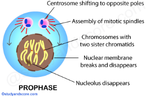
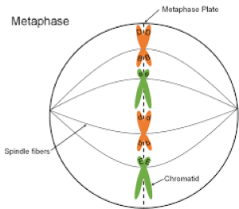
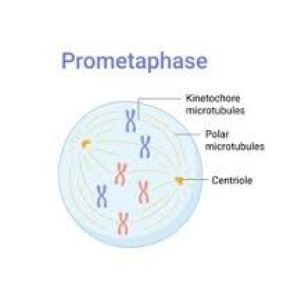
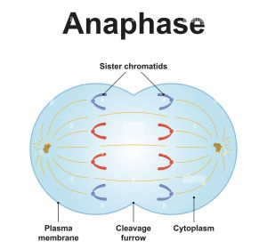
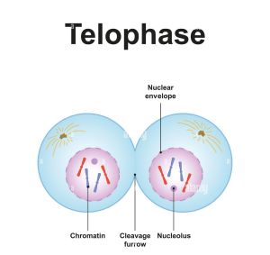
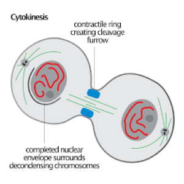

Prophase
Mitosis, a crucial part of the cell cycle, involves a series of distinct phases,
generally considered to be prophase, prometaphase, metaphase, anaphase,
and telophase, followed by cytokinesis.
Each phase involves specific events related to chromosome organization,
separation, and nuclear envelope breakdown and re-formation.

Metaphase
Spindle Attachment:
The spindle fibers attach to the kinetochores,
specialized protein structures located at the centromeres of the chromosomes.
Nuclear Envelope Disintegration:
The nuclear envelope completely breaks down,
allowing the spindle fibers to access the chromosomes.
Chromosomes line up at the metaphase plate, an imaginary
plane in the middle of the cell.
Microtubules attached to the kinetochores pull the chromosomes to this plane

Premetaphase
The nuclear envelope completely breaks down.
Microtubules from the mitotic spindle invade the nuclear area.
These microtubules attach to the kinetochores,
specialized structures on the chromosomes.
Chromosome Alignment:
The chromosomes, now fully condensed and attached to the spindle fibers,
line up along the metaphase plate, an imaginary plane in the center of the cell.

Anaphase
Sister Chromatid Separation:
The sister chromatids (identical copies of a chromosome) separate at the centromere
and are pulled towards opposite poles of the cell by the spindle fibers.
Movement to Poles:
The separated sister chromatids are pulled towards opposite poles of the cell
by microtubules of the mitotic spindle.
Ensuring Equal Chromosome Distribution:
Anaphase is crucial for ensuring that each daughter cell receives a complete
and identical set of chromosomes.

Telophase
In telophase, the final stage of mitosis, the separated chromosomes arrive at
opposite poles of the cell, the nuclear envelope reforms around them, and the
chromosomes begin to decondense. Cytokinesis, the division of the cytoplasm,
follows telophase, resulting in two identical daughter cells.
Chromosomes reach the poles:
The replicated chromosomes, which were separated in anaphase, arrive at
opposite ends of the cell.
Chromosomes decondense:
The chromosomes, which were highly condensed during earlier stages of mitosis,
begin to uncoil and become less compact, returning to a more diffuse state.

Cytokinesis
Cytokinesis typically begins during anaphase or telophase, depending on the cell type.
It involves the division of the cytoplasm and the formation of new cell membranes,
resulting in two separate daughter cells. In animal cells, a cleavage furrow pnches
the cell membrane in two, while in plant cells, a cell plate forms to create a new cell wall.
Overlapping Stages:
Cytokinesis often begins during or immediately following telophase, making it a crucial step
in completing the cell cycle after mitosis. This overlap highlights the close relationship
between nuclear and cytoplasmic division during cell division.
